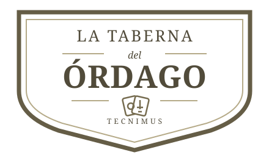

UN BAR CON MUCHA VIDA
Pasa, estás en tu casa.
Gira la escena, acércate a la mesa o toca un personaje para conocer a la cuadrilla.
Activa la aceleración gráfica en tu navegador y vuelve a intentarlo.

Tu compañero se sienta enfrente.
Gira la escena, acércate a la mesa o toca un personaje para conocer a la cuadrilla.
Javiel
Tus cuatro cartas